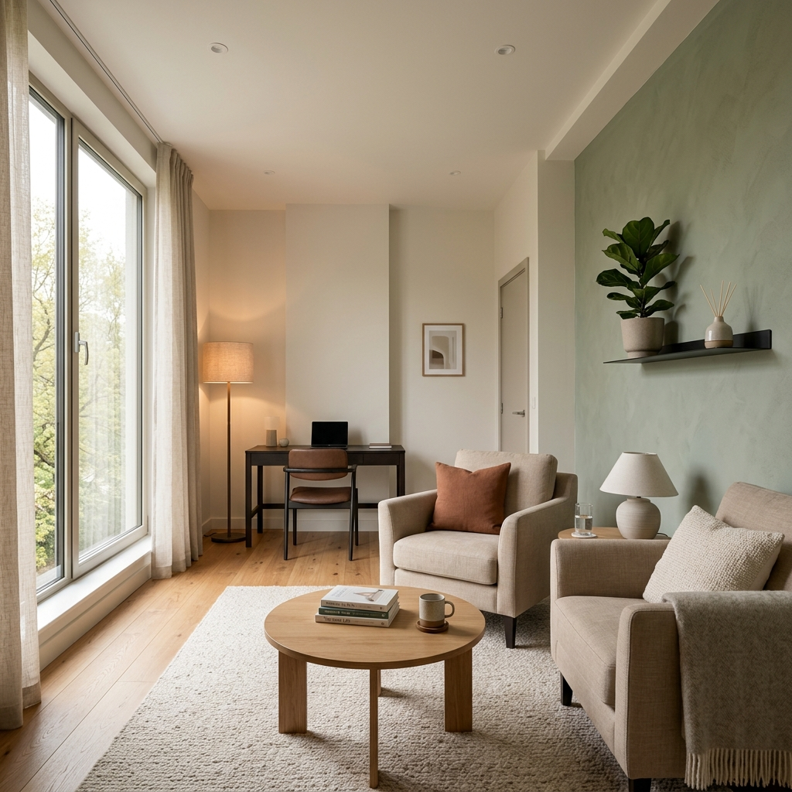
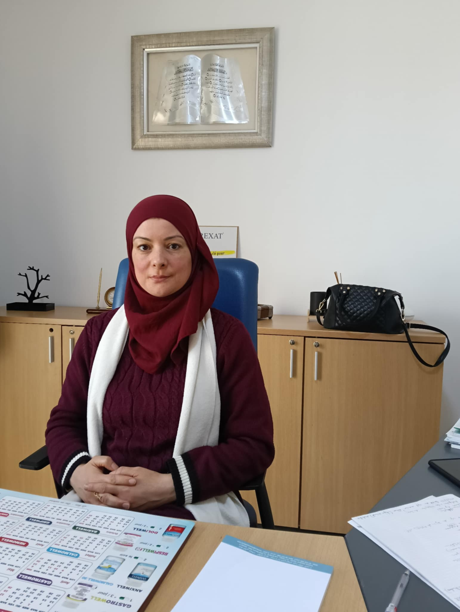

Un accompagnement psychiatrique et psychothérapeutique professionnel et humain, adapté à votre rythme et à vos besoins à Ariana.

Dr. Imene Jallouli
Médecin Psychiatre & Thérapeute - Ariana
Des approches thérapeutiques adaptées pour surmonter les épreuves de la vie et restaurer votre équilibre mental.
Suivi médical et psychothérapeutique pour surmonter la dépression et stabiliser les troubles bipolaires.
Gestion du stress, crises d'angoisse, panique et phobies par des méthodes adaptées comme la TCC.
Techniques actives pour identifier et modifier les pensées et comportements dysfonctionnels.
Prise en charge de l'insomnie chronique et des perturbations du rythme circadien pour retrouver un sommeil réparateur.
Accompagnement bienveillant et médical pour le sevrage et la prévention des rechutes (alcool, tabac, drogues).
Accompagnement spécialisé pour surmonter les chocs émotionnels et guérir des traumatismes passés.
Prise en charge des troubles émotionnels, relationnels, de l'estime de soi et des difficultés scolaires.
Soutien et suivi psychique des futures et jeunes mamans (dépression post-partum, anxiété liée à la grossesse).

Psychiatre & Psychothérapeute dévouée à votre santé mentale
Médecin psychiatre diplômée de la Faculté de Médecine de Tunis, je cumule 10 ans d'expérience dans la prise en charge des troubles psychiatriques et psychologiques. Mon approche intègre des soins médicaux précis avec des méthodes de psychothérapie validées (notamment les TCC) pour offrir un accompagnement complet et profondément humain.
Un espace moderne et chaleureux au Violette Medical Center, Ennasr 2.
Un chemin structuré et bienveillant vers la guérison et l'épanouissement personnel.
Une rencontre initiale pour faire connaissance, exprimer vos besoins en toute liberté et établir un premier contact de confiance.
Une analyse approfondie de vos symptômes, de vos antécédents et de votre fonctionnement global pour dresser un diagnostic clair.
Élaboration conjointe d'un programme personnalisé combinant, selon les besoins, suivi médical et techniques de thérapie (ex. TCC).
Séances régulières pour évaluer vos progrès, ajuster le traitement et consolider vos compétences pour une autonomie durable.
Un cadre de soin professionnel conçu pour votre confort, votre sécurité et votre progrès.
Un espace de parole bienveillant, chaleureux et exempt de tout jugement pour vous exprimer librement.
Le secret médical est au cœur de notre déontologie. Vos informations et échanges restent strictement confidentiels.
Pratiques cliniques fondées sur des données scientifiques solides et des recommandations internationales.
Chaque patient étant unique, l'accompagnement est ajusté précisément à votre profil psychologique.
Gestion facile de vos rendez-vous en ligne via Cal.com ou par simple message WhatsApp.
Possibilité de réaliser des séances par vidéoconférence sécurisée pour les patients éloignés ou à mobilité réduite.
Ce qu'ils disent de leur accompagnement (anonymisé pour préserver la confidentialité)
« Grâce aux séances de TCC avec le Dr Jallouli, j'ai enfin pu surmonter mes crises d'angoisse qui gâchaient mon quotidien. C'est une psychiatre extrêmement à l'écoute, humaine et patiente. Je recommande vivement son cabinet. »
Sami K., Tunis (Anxiété généralisée)
« Le suivi régulier et le traitement personnalisé m'ont permis de remonter la pente après un burn-out sévère. Sa bienveillance et son professionnalisme font toute la différence. Je me sens enfin moi-même à nouveau. »
Rania M., Ariana (Burn-out & Dépression)
« Un accompagnement de grande qualité pour mon fils adolescent. Le Dr Jallouli a su instaurer un climat de confiance rapidement avec lui. Ses difficultés scolaires et son anxiété se sont nettement améliorées. »
Faten B., Ennasr (Suivi Adolescent)
Planifiez une consultation confidentielle en ligne ou en cabinet en quelques clics.
Sélectionnez le type de consultation (en cabinet ou en ligne) et choisissez le créneau qui vous convient.
Toutes les réponses pour préparer votre démarche thérapeutique en toute sérénité.
N'hésitez pas à nous joindre pour toute question ou demande d'information.
Adresse du Cabinet
Violette Medical Center, 4ème étage, Bureau A4-8, Avenue Hédi Nouira, Cité Ennasr 2, Ariana 2001
Téléphone
+216 92 511 980Horaires d'Ouverture
Lundi - Vendredi : 9h00 - 17h00 | Samedi : 9h00 - 13h00